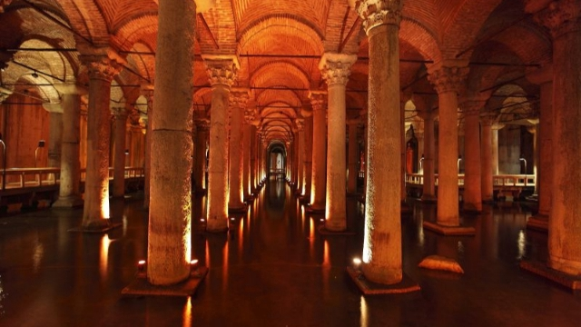
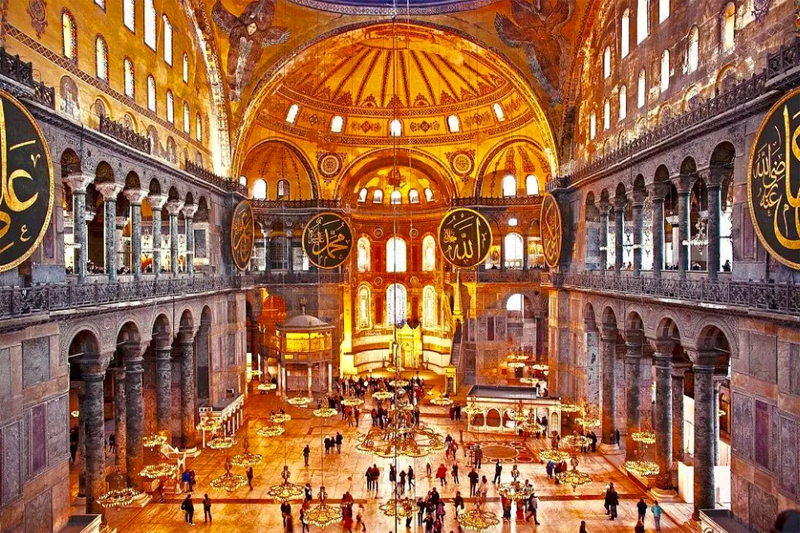
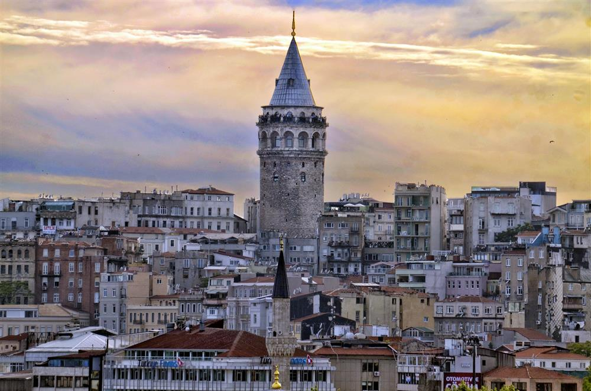
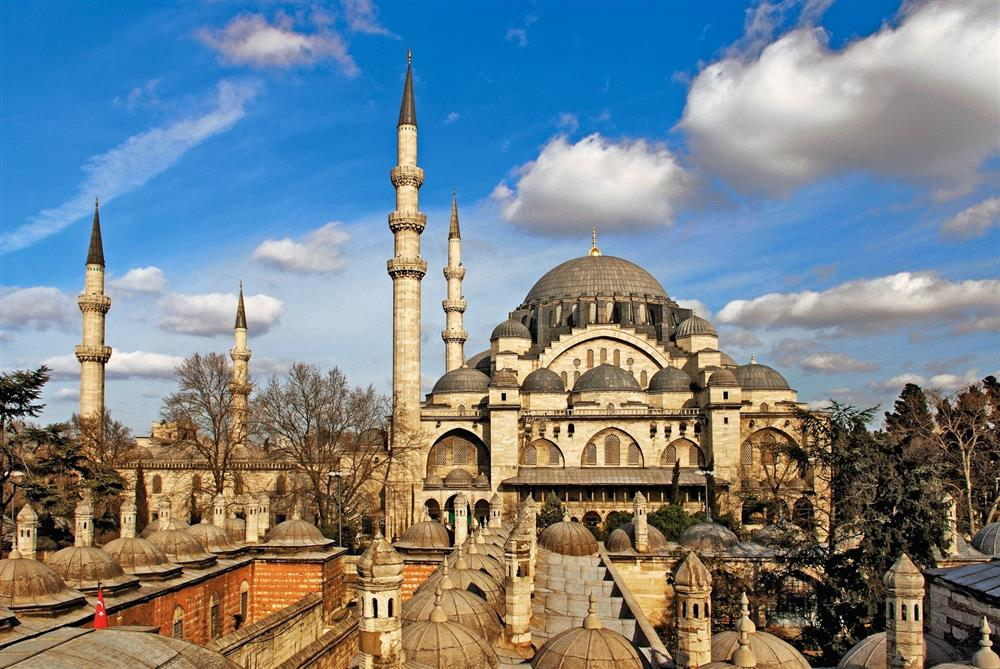
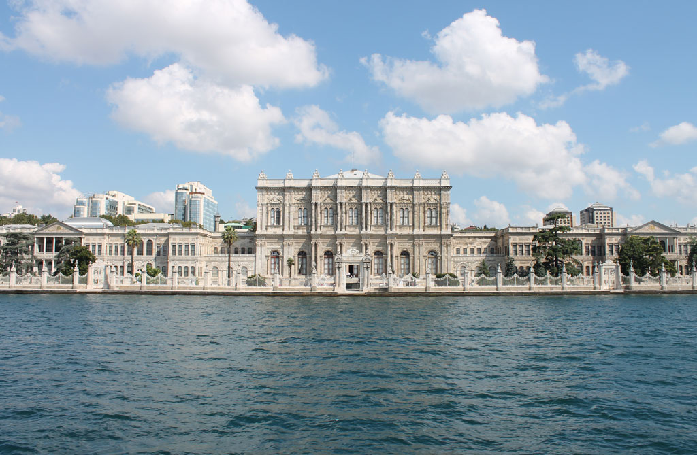
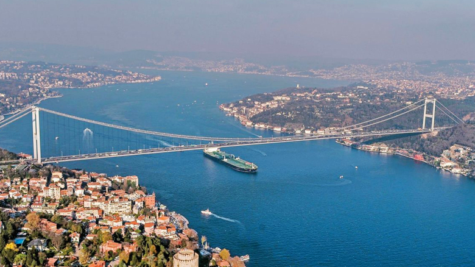
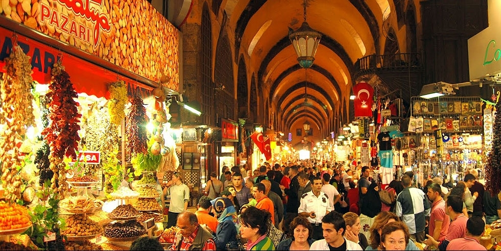
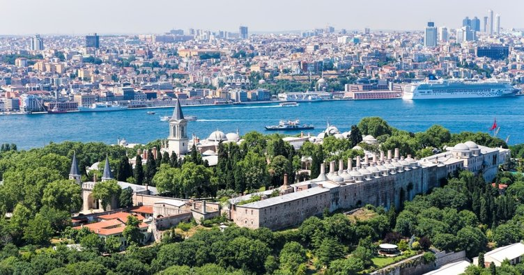
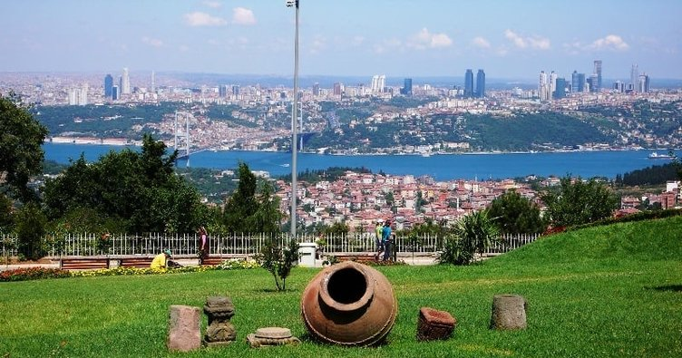

Welcome To İstanbul Tour Guide
Hello everyone! Here we just want to give you some information about İstanbul. In this page we build a web-application. There are some
A Few Information About İstanbul
İstanbul is a metropol city of Turkey. İstanbul is a city which links the 2 continents of Asia and Europe together.
Basilica Cistern
Constructed for Justinianus I, the Byzantium Emperor (527-565), this big underground water reservoir is called as “Yerebatan Cistern” among the public because of the underground marble columns. As there used to be a basilica in the place of the cistern, it is also called Basilica Cistern.
This mysterious venue is an integral part of the Istanbul itineraries and has been visited -among others- by the US former President Bill Clinton, Wim Kok the Prime Minister of the Netherlands, Lamberto Dini, Former Minister of foreign Affairs of Italy, Göran Persson, Former Prime Minister of Sweden and Thomas Klestil, Former prime Minister of Austria until today.
Currently operated by Kültür A.Ş. (Culture Co.), one of the affiliates of Istanbul Metropolitan Municipality, the Basilica Cistern functions as a museum and is the home for many national and international events.
Our museum is open seven days a week. Exceptionally, the first day of religious holidays is opened at 13.00. Visiting hours are 09.00-18.30.
Hagia Sophia Museum
Hagia Sophia is the one of the most visited museums and most prominent monuments in the world in terms of art and the history of architecture. The original building was constructed by the most important architects of the period (527-565), Anthemios (Tralles) and Isidoros (Miletus), under the order of Emperor Justinianos.
It was used as a church for 916 years but, following the conquest of Istanbul by Fatih Sultan Mehmed, the Hagia Sophia was converted into mosque. Afterwards, it was used as a mosque for 482 years. Under the order of Atatürk and the decision of the Council of Ministers, Hagia Sophia was converted into a museum in 1935. Hagia Sophia is open for visit every day. The winter visiting hours for the Hagia Sophia are from 09.00 to 17.00, with the final entry being at 16.00. During the summer, the visiting hours are between 09.00 and 19.00, with the final entry being at 18.00.
Source is,Hagia Sophia Museum Page
Also we add here a button to go Hagia Sophia from Basilica Cistern. Try this button.
Galata Tower
Galata Tower was built in 528. It is in the district of İstanbul and one of the most important symbols of the city. From the tower, mainly the coastal part of İstanbul, The Golden Horn and The Bosphorus can be viewed panoramically.
The Galata Tower is open daily for sightseeing from 09.00 to 19.00. The 9th floor of the Galata Tower serves as a cafeteria during the day and as a restaurant in the evening. The Galata Tower restaurant is open daily from 20.00 to 00.30.
Source: Galata Tower
Suleymaniye Mosque
Built by the most important architect of Ottoman times, Architect Sinan, this superb monument is Istanbul's largest mosque complex. The mosque was built between 1550-1557 by Sultan Süleyman the Magneficent at the peak of the Ottoman Empire. On the long list of Sinan's admired buildings, the Süleymaniye Mosque ranks among the top. The mosque crowns one of the Istanbul's seven hills.
The Suleymaniye Mosque is part of a külliye consisting of a hospital, soup kitchen, hamam, library and medrese(religious school). It was the first mosque with four minarets. The rectangular outlay is similar to the Hagia Sophia but much more refined. The stained glass Windows next to the mihraba re among the oldest and most beautiful works of art in Istanbul's history.
Maiden Tower
The Maiden's Tower is located 150-200 meters off the shore of the Salacak district in Üsküdar. Although it is not definite as to when the Maiden's Tower was built, the tower's architectural style is said by some sources to be from around 340 BCE.
Previous names of the Maiden's Tower were Damalis and Leandros. Damalis is the name of the wife of the king of Athens,Kharis.When Damalis died, she was buried on the shore, and the name Damalis was given to the Tower. It was also known during Byzantine times as "Arcla" which means "a little castle".
If you curious about stories or myhts of Maiden Tower, you should check out here

Grand Bazaar
The Grand Bazaar in Istanbul is one of the largest and oldest covered markets in the world, with 61 covered streets and over 4,000 shops on a total area of 30,700 m2, attracting between 250,000 and 400,000 visitors daily. In 2014, it was listed No.1 among the world's most-visited tourist attractions with 91,250,000 annual visitors. The Grand Bazar at Istanbul is often regarded as one of the first shopping malls of the world.
If you want to learn more information about Grand Bazaar or check out the photos, you can visit here

Dolmabahçe Palace
Dolmabahçe Palace located in the Beşiktaş district of Istanbul, Turkey, on the European coast of the Bosphorus, served as the main administrative center of the Ottoman Empire from 1856 to 1887 and 1909 to 1922.
Mustafa Kemal Atatürk spent the last days of his life in the palace as his health deteriorated. He died at 9:05 A.M. on November 10, 1938, in a bedroom located in the former harem area of the palace. All the clocks in the palace were stopped and set to 9:05 after his death. The clocks outside of his room now are set to the actual time in Turkey, but the clock in the room in which he died still points to 9:05.
Source: Wikipedia
Bosphorus Tour
If the subject is Bosphorus Tour, there are lots of options about it. You can go on a tour with ferries or yacht, you can go on a tour with special tours or just with ferries belongs to city corporation.
You can view the Ferries Timetables.
Spice Bazaar
Located in the Eminönü district of İstanbul and covering an area of 384 blocks, the Egyptian Bazaar is part of the külliye of the New Mosque stretches along Tahmis and Flower Market streets and New Mosque street.
Working Hours
Open: 08.00 Close: 19:30
Closed Days: 29 October and islamic religious holidays.
Here is a Virtual Tour
Topkapı Palace
Topkapı Palace is built a top the Byzantine acropolis on Sarayburnu at the tip of the Istanbul peninsula. It is surrounded by the Sea of Marmara, the Bosphorus and the Golden Horn. On the land side, the palace is surrounded by 1,400-meter-long high encircling walls-known as the “Royal Walls” (Sûr-ı Sultânî)-while on the side facing the sea it is surrounded by Byzantine walls. The palace covers an area of approximately 700,000 square meters, a major part of which area is set aside for the Royal Gardens (Hasbahçe). The court of Topkapı Palace proper is made up of two basic organizations: the Outer Palace (Bîrûn) and the Inner Palace (Enderûn); the Harem was a part of the latter.
Within the Topkapı Palace complex are three main gates-the Imperial Gate (Bâb-ı Hümâyûn), the Gate of Salutation (Bâbüsselâm), and the Gate of Felicity (Bâbüssaâde)-four courtyards, the Harem, the Royal Gardens-today known as the Rose Garden (Gülbahçe)-and various other gardens.
Opening in:
Everyday except Tuesdays. Museum is also closed at first days of the religious festive days until afternoon.
Çamlıca Tepesi
Çamlıca Hill, to differentiate from the nearby Little Çamlıca Hill,is a hill in Üsküdar district of Istanbul. Situated on the Asian part of the city at 268 m (879 ft) above sea level, Çamlıca Hill has a panoramic view of the southern part of Bosphorus and the mouth of Golden Horn.
Blue Mosque
The Blue Mosque (Called Sultanahmet Camii in Turkish) is an historical mosque in Istanbul. The mosque is known as the Blue Mosque because of blue tiles surrounding the walls of interior design.Mosque was built between 1609 and 1616 years, during the rule of Ahmed I. just like many other mosques, it also comprises a tomb of the founder, a madrasa and a hospice.Besides still used as a mosque, the Sultan Ahmed Mosque has also become a popular tourist attraction in Istanbul.
If you will visit there you should check this website to know the other things about Blue Mosque

To Be Continued...